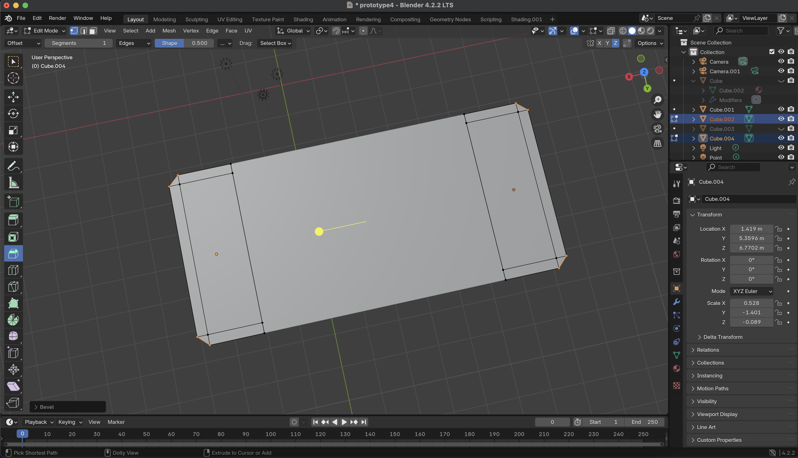
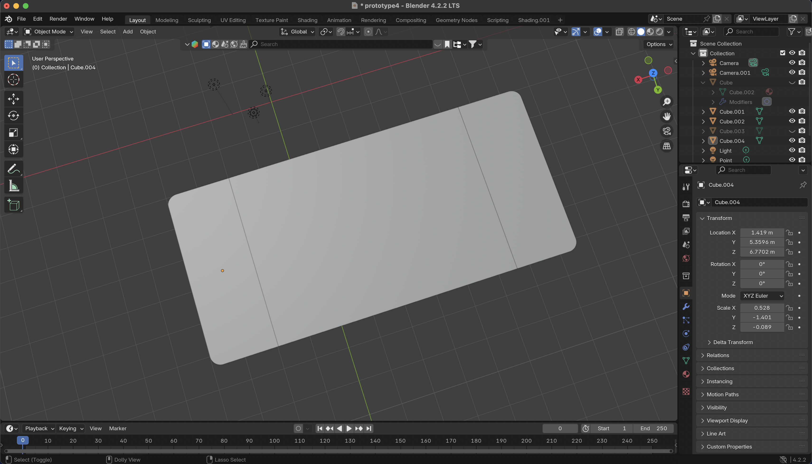
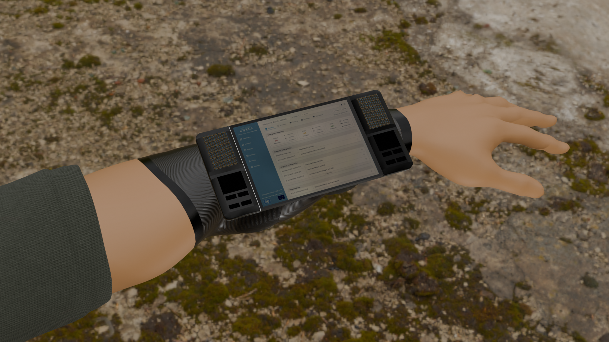
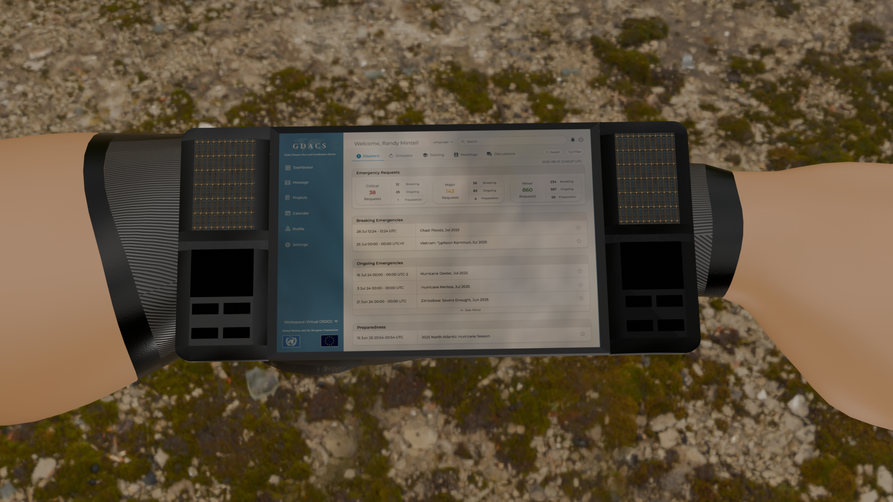

Created revised device foundation.

Rounded corners on sides.

Added interface image and began experimenting with nodes.

Modeled rectangular shapes onto side controllers.

Reconfigured human model for arm - considered the scale of the device.

Added arm color and sleeve.

Began modeling device connection sleeve.

Final touches - cleaned up small details.
First final render - wideshot.

Second final render - close up.